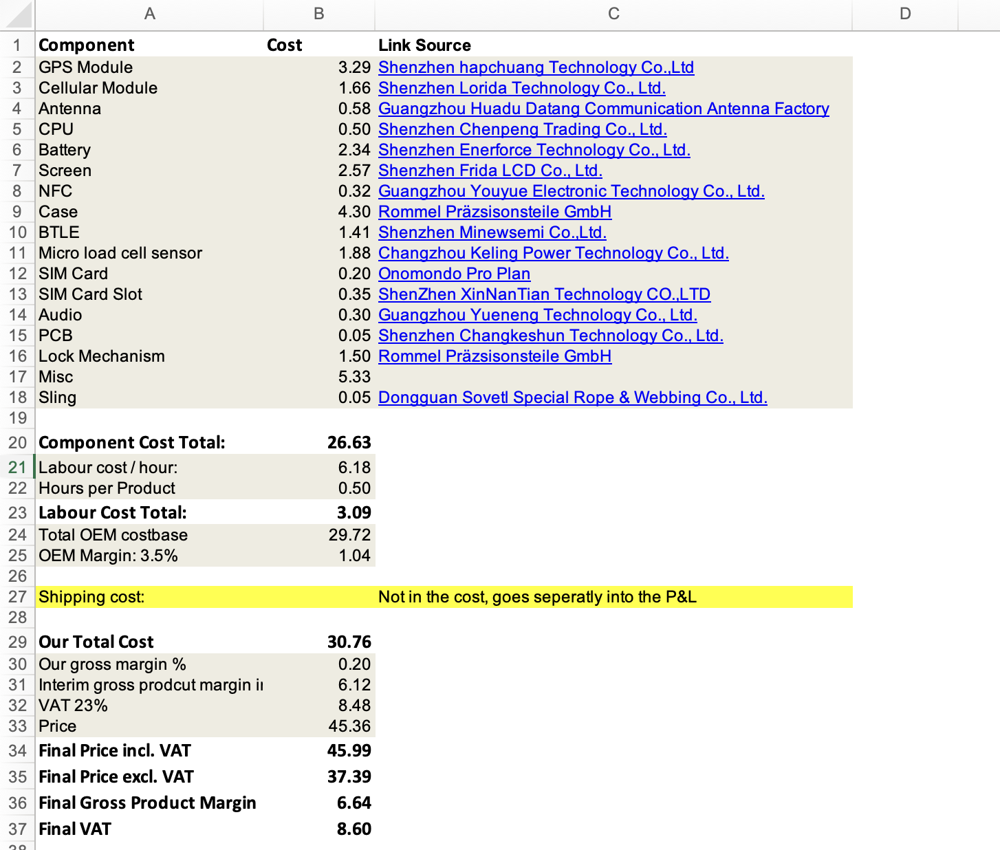
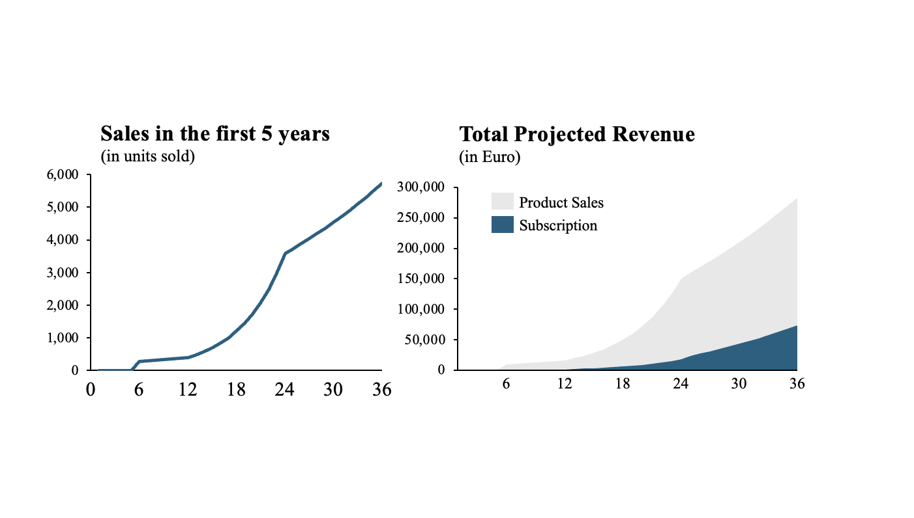
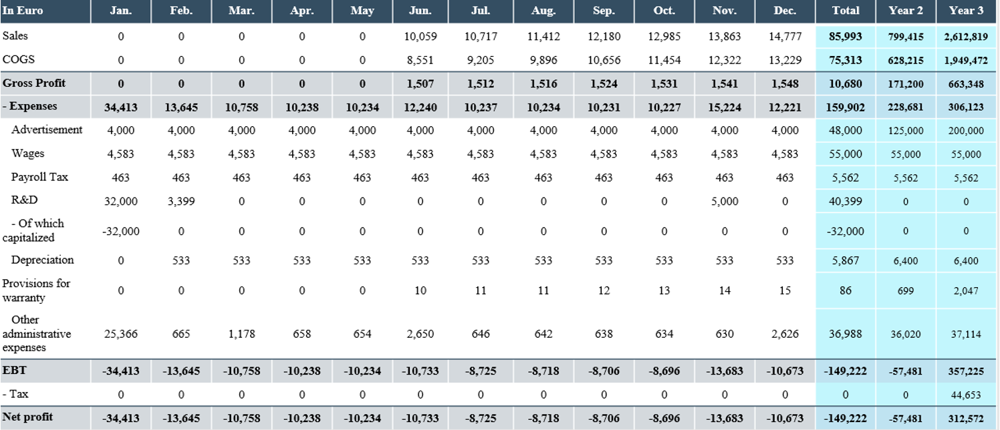
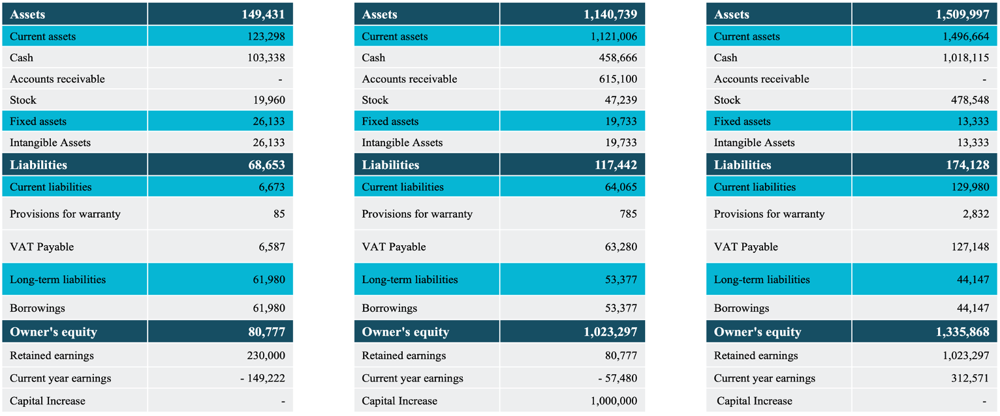
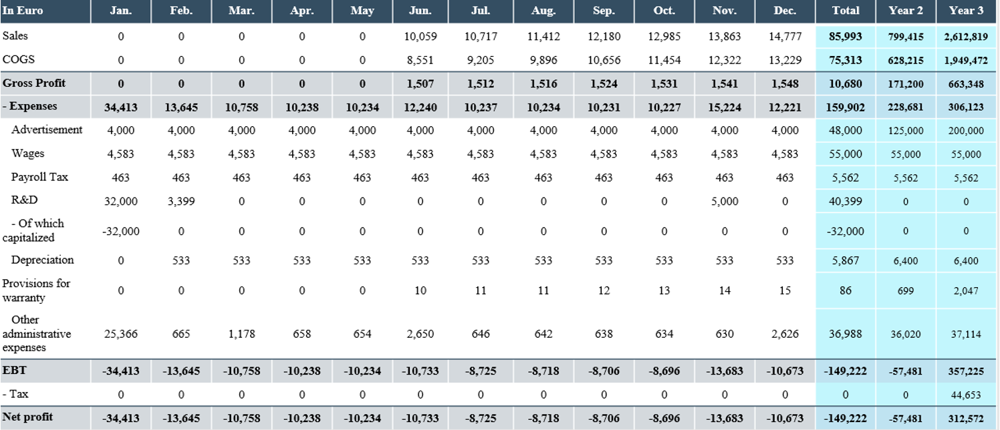
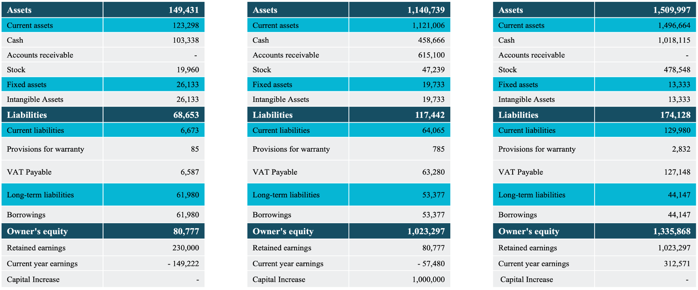

Enterprise Development Module: Financial Analysis
In the new enterprise development module, we conducted a comprehensive financial analysis for our startup idea. Excel, a trusted tool in the financial industry, was our instrument of choice. The first sheet we meticulously crafted was the cost calculation of our product, ensuring every aspect was accounted for.
Next, we meticulously crafted an Assumptions sheet. This sheet housed all the crucial assumptions about our product and subscription sales, pricing, and other pertinent figures for our venture.
Guided by the assumptions sheet, we developed a detailed sales forecast. The first figure below illustrates the sales over the first three years, while the second figure shows the revenue for the first three years, split between the sale of the physical product and the subscriptions. We opted for a simple line chart for the first figure, as it effectively demonstrates the sales of the products every month. The second figure, a stacked chart, was chosen to clearly depict the revenue split and how the ratio between product and subscription revenue is projected to change over time, providing immediate insight for potential investors.
Based on the sales forecast and further research, a full three-financial statement model was built in Excel for the first three years of trading. Below the profit and loss statement, the balance sheet, and the cash flow forecast for the first three years of trading can be seen.
 



Even though this was not the most technically challenging project, it is very important to me personally for two reasons. Firstly, I invested a significant amount of time in perfecting the financial details. Secondly, as someone aspiring to work in the financial industry, I am eager to showcase my ability to build a comprehensive financial model.